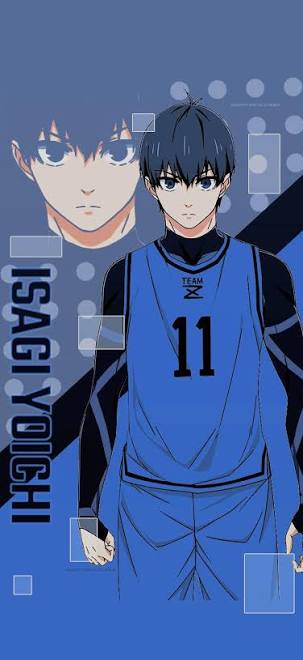
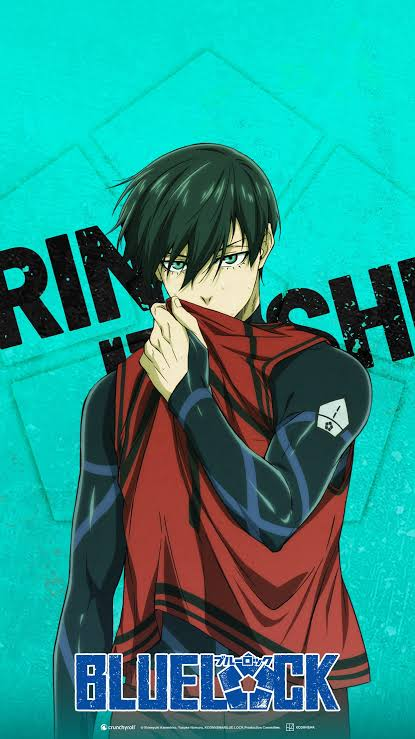
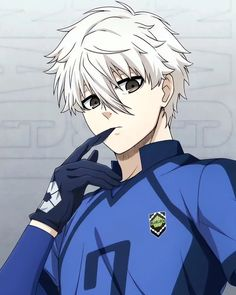
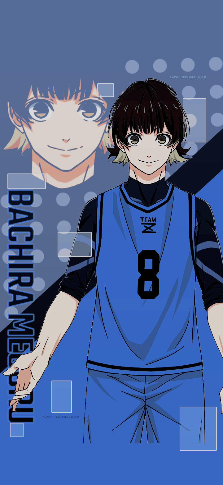

Main Characters

Isagi Yoichi
• Isagi Yoichi: The primary protagonist. Initially a passive team player, he transforms into a ruthless striker using his spatial awareness and metavision to read the entire field, predict the future of the play, and devour his opponents' skills.

Rin Itoshi
Itoshi Rin is the top-ranked forward in the Blue Lock project and the younger brother of world-renowned genius midfielder Itoshi Sae. Driven by a deep-seated obsession to surpass his brother, he plays with a cold, calculative, and highly efficient style.

Nagi Seishirō
Nagi Seishirō is a talented midfielder known for his exceptional technical skills and vision on the field. He is often seen as a leader among his peers, guiding the team with his strategic thinking and ability to create opportunities for his teammates.

Bachira Meguru
Bachira Meguru is a skilled striker known for his aggressive playing style and exceptional goal-scoring ability. He is driven by a strong desire to prove himself and often takes risks to achieve his objectives.

Character 5 Name
Brief description of their role, powers, or personality.